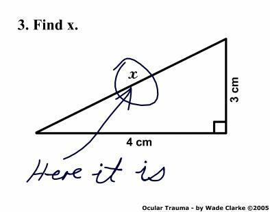

Teaching
Autumn, 2026
|
If you have any questions, please contact me:
| Márton Balázs | m.balazs@our_city.ac.countrycode |
| Telephone: | +44 (0)117 455 7958 |
| Office: | 1.44 Fry Building (map, or this, to be more precise) |
| Click here to book a meeting with me. | |
Spring, 2026
|
Autumn, 2025
Autumn, 2024
Spring, 2024
|
Autumn, 2023
|
Spring, 2023
|
Autumn, 2022
|
Spring, 2022
Autumn, 2021
Spring, 2021
Autumn, 2020
|
Spring, 2020
Autumn, 2019
Spring, 2019
|
Autumn, 2018
|
Spring, 2018
|
Autumn, 2017
|
Spring, 2017
|
Autumn, 2016
|
Spring, 2016
Autumn, 2015
Spring, 2015
Autumn, 2014
Spring, 2014
|
Autumn, 2013
|
Before Summer 2013, in Budapest
Click here.
